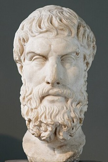

341-270 BC · How to Live
← The philosophy map · About Epicurus
Does having more make us happier, or does happiness come from wanting less?
You get a pay rise, and a year later you have a bigger flat, a better car and bigger bills. You're richer, but are you calmer? Meanwhile, a friend who earns half as much eats simply, sleeps well and spends every weekend with friends. More than two thousand years ago, a man in a garden in Athens said he knew why.
Read one part at a time. After each part, close your eyes and answer the question before you check.
Epicurus was born in 341 BC on the Greek island of Samos. He studied the ideas of Democritus, who believed that everything is made of tiny atoms. After teaching in other cities, he moved to Athens and, around 306 BC, bought a house with a garden. There he started a school, known simply as the Garden. Very unusually for the time, women and slaves were welcome to study there.
What was unusual about the Garden?
Today an 'epicure' is someone who loves fine food and wine. But Epicurus himself mostly lived on bread, water and a little cheese. He taught that pleasure is the goal of life, but by pleasure he meant something quiet: no pain in the body and no fear in the mind. The greatest pleasures, he said, cost almost nothing: a simple meal, a good conversation and, above all, friendship.
What did Epicurus mean by 'pleasure'?
Epicurus believed that most unhappiness comes from fear. So he offered a 'fourfold cure', a short recipe against worry: don't fear the gods; don't fear death; what is good is easy to get; what is bad is easy to bear. Most of his 300 books are lost, but a few letters survive. In one, written on the last day of his life in 270 BC, he says he is happy despite great pain, because he remembers his conversations with his friends.
What are the four parts of the fourfold cure?
Each word is hidden in a sentence. Read it aloud and say what you think the bold word means. Then reveal and compare.
Which desires would Epicurus call natural and necessary, and which would he call empty? Decide together, then reveal.
Now you: explain Epicurus's recipe for happiness to a friend who is always stressed about money. Speak for about a minute. Use the starters if they help.
You get two job offers. Job A pays twice as much, but you'll work long hours, move to a new city and rarely see your friends. Job B pays enough for a simple, comfortable life, you finish at four o'clock every day, and your best friends live nearby.
Tap two cards. Use the timer to keep going, and use at least two of the phrases above.
No looking back. Answer from memory first, then check.
What did Diogenes believe we need in order to be free?
What does Plato's story of the cave show?
What did Heraclitus mean by 'You cannot step into the same river twice'?
From memory, out loud. Then check.
1. According to Epicurus, what is the secret of a happy life?
2. What are the four parts of the fourfold cure?
3. What are Epicurus's three kinds of desire?
4. What does 'luxury' mean? Give an example.